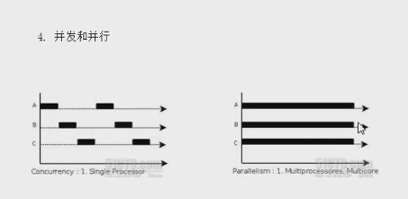
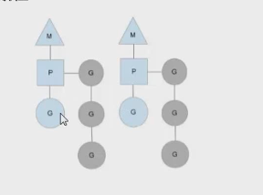

（1）进程与线程
（一）进程是程序在操作系统中的一次执行过程。系统进行资源分配和调度的一个独立单位。
（二） 线程是进程的一个执行实体，是CPU调度与分配的基本单位，它是比进程更小的能独立运行的基本单位。
（三） 一个进程可以创建和撤销多个进程，同一个进程中的多个线程可以并发执行。
(2) 单线程与多线程
进程 ——》 一个进程 ——》单线程程序
进程——》 多个进程 ——》 多线程程序
(3) 并发与并行
(一) 多线程程序在一个核的CPU上运行，就是并发
(二) 多线程程序在多个核的CPU上运行，就是并行

并发在任一时刻只有一个在工作，并行是都在工作。
（4）协程与线程
(一) 协程：独立的栈空间，共享堆空间，调度由用户自己控制，本质上有点类型于用户级线程，这些用户级线程的调度也是自己实现的。
（二）线程：一个线程可以跑多个协程，协程是轻量级线程。
（5）golang里面goroutine 调度模型

M: 操作系统里面的线程
P：上下文
G: goroutine
可以看出一个物理进程，可以开启多个协程。